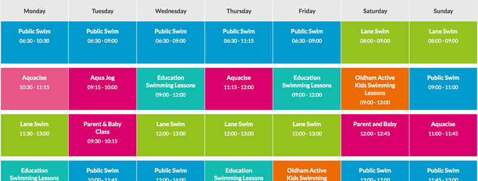

RDE 08
por: Gabriel Emanuel
TAGS
|
↪ tag <q> |
Tag: <TABLE>
A tag <table> é responsável por definir a demarcação de uma tabela. Tabela, basicamente, é a disposição de dados em duas dimensões: linhas e colunas. Uma tabela permite consultar de forma rápida e fácil valores que indicam algum tipo de conexão entre diferentes tipos de dados, por exemplo, uma pessoa e sua idade, ou um dia da semana, ou os horários de uma piscina local.

É possível facilmente relacioná-la com matrizes
As tabelas possuem estrutura. As informações são facilmente interpretadas fazendo associações visuais entre os cabeçalhos de linha e coluna.
O conteúdo de cada tabela é delimitada por estas duas tags: <table></table>. Dentro delas, trabalha-se com outras tags e atributos para manipular as linhas e colunas.
➥ <td> ➺ É a tag responsável por criar células em uma linha. Por exemplo, se forem utilizados "4 <td>s", seriam criados 4 células em uma linha. Observe:
Código:
O resultado deve ficar semelhante a esse:
➥ <tr> ➺ É responsável por interromper o crescimento desta linha e começar a colocar células subsequentes em uma segunda linha, precisamos usar o elemento <tr> ('tr' significa 'linha da tabela'). Vamos trabalhar isso agora.
Inicialmente, criamos algumas células que constituem uma linha. Mas, do ponto de vista do HTML, são consideradas apenas 4 colunas. Sendo assim, vamos definir que elas constituem uma linha, da seguinte forma:
Observe que a exibição da tabela não mudou.
Agora, vamos adicionar mais uma ou mais linhas à nossa tabela. Lembrando que, para tal, é necessário utilizar a tag <tr> envolvendo as células que serão criadas com a tag <td>. No meu caso, criarei duas linhas além daquela já criada e, para cada célula, usarei uma notação matricial. Observe:
Na prática, a tabela fica assim:
➥ <th> ➺ É uma tag que corresponde a uma função de cabeçalho, "nomeando" a linha ou a coluna em questão. Para ficar mais claro, vamos utilizar uma tabela para dividir os números de 0 a 10 na sua respectiva coluna que indique se ele é par ou impar, da seguinte forma:
Para esse caso, utilizei-me deste código:

Mas, e se fossemos "capotar" a tabela, deixando os números agora dispostos nas linhas, ao contrário do caso anterior, no qual eles estavam dispostos em coluna?
O seguinte código, resolveria muito bem à situação:
Ainda é possível usar outros elementos em tabelas, como, por exemplo, mesclar células, através do atributo colspan para as colunas ou do atributo rowspan para as fileiras, também é possível trabalhar com grupos de cores, através da tag <coulgroup> e <col>
O que é mesclar células em uma tabela? Exemplo prático!
Tabela:
Código:
Exemplo retirado e adaptado de: Tabela com células mescladas
Tag: <DEL>
O elemento HTML <del> (ou Elemento HTML de Texto Excluído ) representa uma parte do texto que foi "excluída" de um documento. Este elemento é (não necessariamente) renderizado pelos navegadores com uma linha sobre o texto. De forma mais simples, é um traço que é colocado sobre um texto que é conhecido como Texto Tachado.
Para isso, basta usar a tag <del> no conteúdo que será tachado.
Vamos a um exemplo mais prático de um texto com uma parte suprimida, e, uma parte nova inserido:
Código:
Resultado:
Minha cor favorita é vermelha azul!
Mesmo sendo uma tag que altere um aspecto visual de uma página HTML, ele pode conter dois atributos:
| Atributo | Valor | Descrição |
|---|---|---|
| cite | URL | Especifica uma URL para um documento que explica a razão pela qual o texto foi suprimido |
| datetime | YYYY-MM-DDThh:mm:ssTZD | Especifica a data e hora de quando o texto foi suprimido |
Tag: <INS>
Em termos muito práticos, funciona da mesma forma que com a tag <del> porém, o efeito visual causado é diferente. Ao invés de tachar, a tag sublinhará o texto!
Por formalidade, a sua sintaxe padrão é:
Exemplo prático:
Resultado:
Minha cor favorita é vermelha azul!
Os mesmos atributos que são válidos para a tag <del>, também são válidas para a tag <ins>. (Clique aqui para revisá-los)
Tag: <SUB>
O marcador <sub> ("Subscript Element") ou subscrito, é utilizado escrever um texto com letras menores e com o alinhamento abaixo das que do resto do conteúdo.
Sua sintaxe segue a padrão das outras duas anteriores:
Código de exemplo contextualizado:
Resultado final:
O benzeno é um hidrocarboneto aromático cuja fórmula química é:
C6H6 - Seis átomos de carbono e seis de hidrogênio.
Tag: <SUP>
O marcador <sup> ("Superscript Element") ou sobrescrito é utilizado escrever um texto com letras menores e com o alinhamento acima das que do resto do conteúdo.
Sua sintaxe segue a padrão das outras três anteriores:

Código de exemplo contextualizado:
Resultado final:
O teorema de Pitágoras diz que:
Em qualquer triângulo retângulo, o quadrado do comprimento da hipotenusa (o lado oposto ao ângulo reto) é igual à soma dos quadrados dos comprimentos dos catetos (lados que formam o ângulo reto).
Se a hipotenusa for definida com a e os outros dois lados, os catetos, como b e c, pode-se afirmar que:
a2=b2+c2
Tag: <BLOCKQUOTE>
A tag <blockquote> define uma
Podemos também, fazer uso do atributo cite que conterá o link que contém a citalção.
Exemplo:
Resultado final:
Há 50 anos, o WWF protege o futuro da natureza. Organização de conservação líder mundial, o WWF atua em 100 países e é apoiado por 1,2 milhão de membros nos Estados Unidos e cerca de 5 milhões em todo o mundo;
NOTA: Usamos a tag <blockquote> para textos longos. Para textos curtos, utilizaremos a tag <q> que trabalharemos no próximo item.
Tag: <Q>
A tag <q> é usada para indicar citações
Os navegadores geralmente colocam o texto <q> entre aspas.
Se a citação se estender por várias linhas, você deve usar a tag <blockquote>. A maioria dos navegadores envolve o texto em bloco como texto recuado.
Podemos também, fazer uso do atributo cite que conterá o link que contém a citalção.
Exemplo:
Resultado final:
Sean Stephenson said YOU'LL ALWAYS HAVE AN EGO. THE MOMENT YOU FORGET THAT, IT WILL START RUNNING THE SHOW
and I tend to agree.
Tag: <ABBR>
O Elemento HTML <abbr> (ou Elemento de Abreviação HTML) representa uma abreviação e opcionalmente fornece uma descrição completa para ela. Se presente, o atributo title deve conter a descrição completa e apenas ela.
Nota: Quando presente, o número gramatical (singular/plural) do texto no atributo title, deve ser correspondente ao do conteúdo do elemento <abbr>. Isso também deve ocorrer no caso das linguagens com mais de dois números gramaticais (por exemplo, em árabe não há somente palavras no singular e plural, mas tem também uma categoria dual).
Sintaxe:
Exemplo:
Resultado:
HTML é uma linguagem de marcação utilizada na construção de páginas na Web."
Efeito causado na prática:
Tag: <ADDRESS>
A tag <address> define as informações de contato do autor / proprietário de um documento ou artigo.
A informação de contato fornecida por um conteúdo do elemento <address> pode tomar qualquer forma que é apropriada para o contexto, e pode incluir qualquer tipo de informação de contato necessária, como endereço físico, URL, email, telefone, mídia social, coordenadas geográficas, por aí vai. Deve incluir o nome da pessoa, grupo, ou organização para qual as informações de contato se referem.
<address> pode ser usado em uma variedade de contextos, como fornecer informação de contato de uma empresa no header da página, ou indicar o autor de um artigo incluindo um elemento <address> dentro do <article></article>
Notas de Uso:
- Para representar um endereço arbitrário, um que não é relacionado à informação para contato, use um elemento <p> ao invés do elemento <address>.
- Este elemento não deve conter mais informação além da informação de contato, como uma data de publicação (a qual pertence ao elemento <time>).
- Tipicamente um elemento <address> pode ser posicionado dentro do elemento <footer> da seção atual, se houver um.
Sintaxe:
Exemplo:
Resultado:
IFPR - Campus Irati
R. Pedro Koppe, 100 - Vila São João
84.507-302
(42) 2104-0200
Irati - PR
Tag: <CITE>
A tag <cite> representa uma referência a um trabalho artístico. Deve incluir o título do trabalho ou uma URL de referência, que pode ser em uma forma abreviada de acordo com as convenções usadas para a adição dos metadados de citação.
O texto no <cite> elemento geralmente é processado em itálico.
Notas de Uso:
- Um trabalho criativo deve conter uma citação de um livro, um documento, um ensaio, um poema, um filme, um programa de televisão, um videogame, uma escultura, uma pintura, uma produção cinematográfica, um jogo, uma ópera, um musical , uma exibição, um relatório de um caso legal, um programa de computador, um site, uma página da web, um post de um blog ou comentário, um post em um fórum ou um comentário no mesmo, um tweet, uma obra ou discurso , etc.
- O W3C específicou que alguns estados, para referenciar um trabalho criativo, deve incluir o nome do autor, enquanto um WHATWG específico que não deve ser incluído o nome do autor sob nenhuma circustância.
- Use o atributo cite em um elemento <blockquote> ou <q> para referenciar uma fonte online.
Sintaxe:
Exemplo:
Resultado:
Mais informações podem ser encontradas em [ISO-0000].
Tag: <BDO>
A tag <bdoe> (bidirectional override) é usada para substituir a direcionalidade atual do texto. Isso faz com que a direcionalidade dos objetos seja ignorada em favor da direcionalidade especificada
Atributo
➥ <dir> ➺ Determina a direção do texto neste elemento. Os valores possíveis são:
| Valor: | Descrição |
|---|---|
| ltr | Indica que o texto ficará da Esquerda para a Direita (Left-To-Right). |
| rtl | Indica que o texto ficará da Direita para a Esquerda (Reft-To-Light). |
Sintaxe:
Exemplo:
Resultado:
Este texto ficará da esquerda para a direita.
Este texto ficará da direita para a esquerda.
Tag: <CODE>
A tag <code> apresenta seu conteúdo estilizado de maneira a indicar que o texto é um pequeno fragmento de código. Por padrão, o conteúdo é exibido utilizando a fonte monoespaçada padrão do user agent's
Ou seja, tag <code> é usada para definir um pedaço de código de computador. O conteúdo interno é exibido na fonte monoespaçada padrão do navegador.
Dica: esta tag não está obsoleta. No entanto, é possível obter um efeito mais rico usando CSS
Sintaxe:
Exemplo:
Resultado:
Exemplo adaptado de: https://www.w3schools.com/tags/tryit.asp?filename=tryhtml_phrase_code
Compatibilidade com Navegadores
Tag: <PRE>
O marcador <pre> ("Preformatted Text Element") ou texto pré-formatado, é utilizado para inserir um conteúdo que se deseja seja visualizado do modo como foi editado. Para destacar o conteúdo a fonte visualizada é "monospace".
As tags <p></p> e <br> não devem ser utilizadas, pois descaracterizam as funções da tag <pre></pre>
Sintaxe:
Exemplo 1)
Resultado:
p {
background: #000000;
color: #FFFFFF;
margin-left: 0px;
padding: 10px;
text-align: left;
}
Exemplo 2)
Se fizermos uma sutil alteração na IDENTAÇÃO deste mesmo código:
Que resulta num aspecto visual consideravelmente diferente do que o anterior, observe:
p {
background: #000000;
color: #FFFFFF;
margin-left: 0px;
padding: 10px;
text-align: left;
}
Tag: <KBD>
O marcador <kbd> ("Keyboard Input Element") ou chave(s) de entrada ou comando(s) é utilizado para orientar usuários em instruções normalmente "on line", ou impressas. Para destacar o(s) comando(s) a fonte visualizada é "monospace".
O elemento HTML representa uma extensão de texto embutido denotando a entrada textual do usuário a partir de um teclado, entrada de voz ou qualquer outro dispositivo de entrada de texto. Por convenção, o padrão do agente do usuário é renderizar o conteúdo de um elemento usando sua fonte monoespaçada padrão, embora isso não seja obrigatório pelo padrão HTML.
Notas de Uso:
Outros elementos podem ser usados em conjunto <kbd> para representar cenários mais específicos:
- Aninhar um <kbd> elemento dentro de outro <kbd> elemento representa uma chave real ou outra unidade de entrada como uma parte de uma entrada maior.
- Aninhar um <kbd> elemento dentro de um <samp> elemento representa a entrada que foi ecoada de volta para o usuário pelo sistema.
- Aninhar um <samp> elemento dentro de um <kbd> elemento, por outro lado, representa uma entrada baseada no texto apresentado pelo sistema, como nomes de menus e itens de menu, ou nomes de botões exibidos na tela.
Dica: esta tag não está obsoleta. No entanto, é possível obter um efeito mais rico usando CSS
Sintaxe:
Exemplo 1)
Resultado:
Para preencher várias células de uma planilha Excel da Microsoft ou Calc da Organização OpenOffice, com o mesmo valor marcam-se as células a serem preenchidas, independente de estarem ou não juntas digite então o valor e a seguir aperte a tecla Crtl e depois a tecla Enter.
Exemplo 2)
Nesse exemplo, vamos usar um pequeno trecho em CSS e demonstrar, na prática, uma utilidade muito legal para essa tag html.
Usaremos o seguinte código HTML:
Que resulta no seguinte aspecto visual, observe:
Por favor, pressione Ctrl + Shift + R para renderizar novamente a página
Agora, usaremos o seguinte código CSS: (NÃO é necessário compreendê-lo no momento!!)
E agora, unindo o HTML ao CSS, temos o seguinte efeito:
Por favor, pressione Ctrl + Shift + R para renderizar novamente a página
Extra:
Press Ctrl + C para copiar o texto (Windows).
Press Cmd + C para copiar o texto (Mac OS).
Conteúdo Extra!
O que são Tags Semânticas e quais são elas?
-
CITAÇÕES
- https://developer.mozilla.org/pt-BR/docs/Web/HTML/Element/del - acesso em 11/09/2021
- https://www.w3schools.com/tags/tag_ins.asp - acesso em 11/09/2021
- https://www.portaldefinancas.com/html/sub.html - acesso em 11/09/2021
- https://www.portaldefinancas.com/html/sup.html - acesso em 11/09/2021
- https://www.techonthenet.com/html/elements/blockquote_tag.php - acesso em 11/09/2021
- https://www.w3schools.com/tags/tag_blockquote.asp - acesso em 11/09/2021
- https://www.quackit.com/html_5/tags/html_q_tag.cfm - acesso em 12/09/2021
- https://developer.mozilla.org/pt-BR/docs/Web/HTML/Element/abbr - acesso em 12/09/2021
- https://www.w3schools.com/tags/tag_address.asp - acesso em 12/09/2021
- https://developer.mozilla.org/pt-BR/docs/Web/HTML/Element/address - acesso em 12/09/2021
- https://www.techonthenet.com/html/elements/address_tag.php - acesso em 12/09/2021
- https://developer.mozilla.org/pt-BR/docs/Web/HTML/Element/cite - acesso em 12/09/2021
- https://www.w3schools.com/tags/tag_cite.asp - acesso em 12/09/2021
- https://developer.mozilla.org/pt-BR/docs/Web/HTML/Element/bdo - acesso em 12/09/2021
- https://developer.mozilla.org/en-US/docs/Glossary/User_agent - acesso em 12/09/2021
- https://www.w3schools.com/tags/tag_code.asp - acesso em 12/09/2021
- https://developer.mozilla.org/pt-BR/docs/Web/HTML/Element/code - acesso em 12/09/2021
- https://www.portaldefinancas.com/html/pre.html - acesso em 12/09/2021
- https://www.portaldefinancas.com/html/kbd.html - acesso em 13/09/2021
- https://www.w3schools.com/tags/tryit.asp?filename=tryhtml_phrase_kbd - acesso em 13/09/2021
- https://developer.mozilla.org/en-US/docs/Web/HTML/Element/kbd - acesso em 13/09/2021
Ultima modificação em: 13/09/2021 às 02:42, horário oficial de Brasilia - Brasil